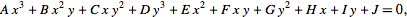
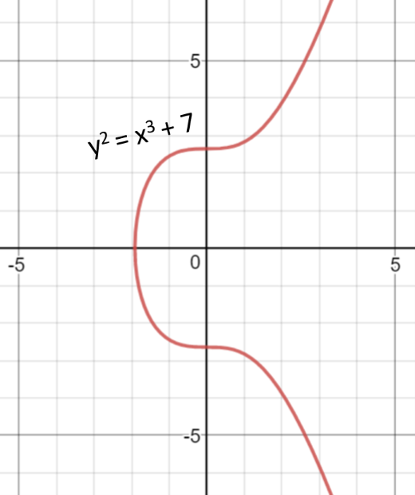
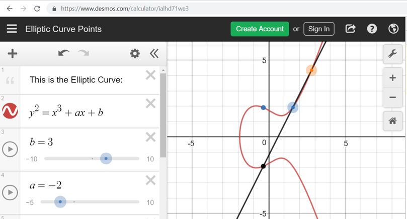
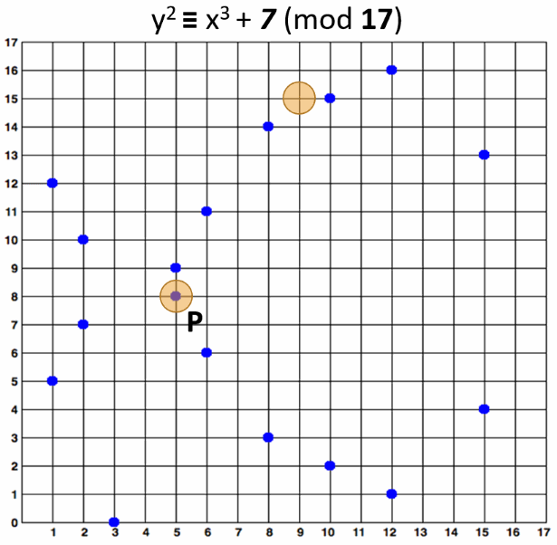
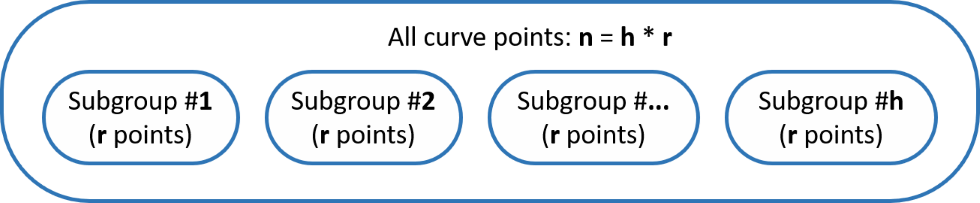
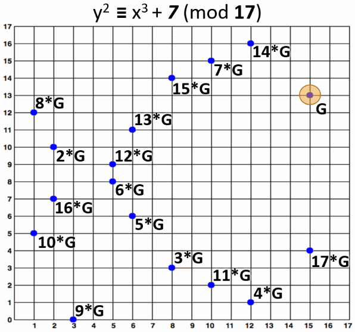
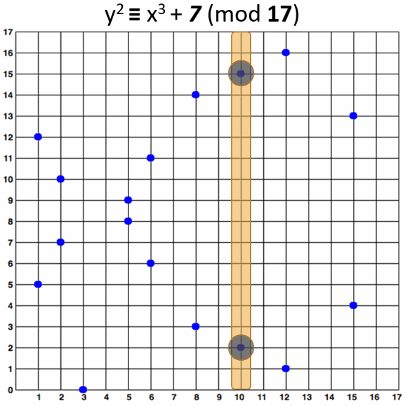
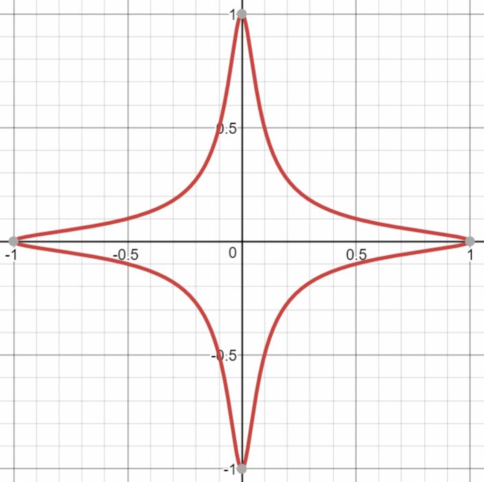

Elliptic Curve Cryptography (ECC)
The Elliptic Curve Cryptography (ECC) is modern family of public-key cryptosystems, which is based on the algebraic structures of the elliptic curves over finite fields and on the difficulty of the Elliptic Curve Discrete Logarithm Problem (ECDLP).
ECC implements all major capabilities of the asymmetric cryptosystems: encryption, signatures and key exchange.
The ECC cryptography is considered a natural modern successor of the RSA cryptosystem, because ECC uses smaller keys and signatures than RSA for the same level of security and provides very fast key generation, fast key agreement and fast signatures.
ECC Keys
The private keys in the ECC are integers (in the range of the curve's field size, typically 256-bit integers). Example of 256-bit ECC private key (hex encoded, 32 bytes, 64 hex digits) is: 0x51897b64e85c3f714bba707e867914295a1377a7463a9dae8ea6a8b914246319.
The key generation in the ECC cryptography is as simple as securely generating a random integer in certain range, so it is extremely fast. Any number within the range is valid ECC private key.
The public keys in the ECC are EC points - pairs of integer coordinates {x, y}, laying on the curve. Due to their special properties, EC points can be compressed to just one coordinate + 1 bit (odd or even). Thus the compressed public key, corresponding to a 256-bit ECC private key, is a 257-bit integer. Example of ECC public key (corresponding to the above private key, encoded in the Ethereum format, as hex with prefix 02 or 03) is: 0x02f54ba86dc1ccb5bed0224d23f01ed87e4a443c47fc690d7797a13d41d2340e1a. In this format the public key actually takes 33 bytes (66 hex digits), which can be optimized to exactly 257 bits.
Curves and Key Length
ECC crypto algorithms can use different underlying elliptic curves. Different curves provide different level of security (cryptographic strength), different performance (speed) and different key length, and also may involve different algorithms.
ECC curves, adopted in the popular cryptographic libraries and security standards, have name (named curves, e.g. secp256k1 or Curve25519), field size (which defines the key length, e.g. 256-bit), security strength (usually the field size / 2 or less), performance (operations/sec) and many other parameters.
ECC keys have length, which directly depends on the underlying curve. In most applications (like OpenSSL, OpenSSH and Bitcoin) the default key length for the ECC private keys is 256 bits, but depending on the curve many different ECC key sizes are possible: 192-bit (curve secp192r1), 233-bit (curve sect233k1), 224-bit (curve secp224k1), 256-bit (curves secp256k1 and Curve25519), 283-bit (curve sect283k1), 384-bit (curves p384 and secp384r1), 409-bit (curve sect409r1), 414-bit (curve Curve41417), 448-bit (curve Curve448-Goldilocks), 511-bit (curve M-511), 521-bit (curve P-521), 571-bit (curve sect571k1) and many others.
ECC Algorithms
Elliptic-curve cryptography (ECC) provides several groups of algorithms, based on the math of the elliptic curves over finite fields:
- ECC digital signature algorithms like ECDSA (for classical curves) and EdDSA (for twisted Edwards curves).
- ECC encryption algorithms and hybrid encryption schemes like the ECIES integrated encryption scheme and EEECC (EC-based ElGamal).
- ECC key agreement algorithms like ECDH, X25519 and FHMQV.
All these algorithms use a curve behind (like secp256k1, curve25519 or p521) for the calculations and rely of the difficulty of the ECDLP (elliptic curve discrete logarithm problem). All these algorithms use public / private key pairs, where the private key is an integer and the public key is a point on the elliptic curve (EC point). Let's get into details about the elliptic curves over finite fields.
Elliptic Curves
In mathematics elliptic curves are plane algebraic curves, consisting of all points {x, y}, described by the equation:

Cryptography uses elliptic curves in a simplified form (Weierstras form), which is defined as:
- y2 = x3 + _a_x + b
For example, the NIST curve secp256k1 (used in Bitcoin) is based on an elliptic curve in the form:
- y2 = x3 + 7 (the above elliptic curve equation, where a = 0 and b = 7)
This is a visualization of the above elliptic curve:

To learn more about the equations of the elliptic curves and how they look like, play a bit with this online elliptic curve visualization tool: https://www.desmos.com/calculator/ialhd71we3.

Elliptic Curves over Finite Fields
The elliptic curve cryptography (ECC) uses elliptic curves over the finite field 𝔽p (where p is prime and p > 3) or 𝔽2m (where the fields size p = 2_m_). This means that the field is a square matrix of size p x p and the points on the curve are limited to integer coordinates within the field only. All algebraic operations within the field (like point addition and multiplication) result in another point within the field. The elliptic curve equation over the finite field 𝔽p takes the following modular form:
- y2 ≡ x3 + _a_x + b (mod p)
Respectively, the "Bitcoin curve" secp256k1 takes the form:
- y2 ≡ x3 + 7 (mod p)
Unlike RSA, which uses for its key space the integers in the range [0...p-1] (the field ℤp), the ECC uses the points {x, y} within the Galois field 𝔽p (where x and y are integers in the range [0...p-1]).
An elliptic curve over the finite field 𝔽p consists of:
- a set of integer coordinates {x, y}, such that 0 ≤ x, y < p
- staying on the elliptic curve: _y_2 ≡ x3 + _a_x + b (mod p)
Example of elliptic curve over the finite field 𝔽17:
- y2 ≡ x3 + 7 (mod 17)
This elliptic curve over 𝔽17 looks like this:

Note that the elliptic curve over finite field y2 ≡ x3 + 7 (mod 17) consists of the blue points at the above figure, i.e. in practice the "elliptic curves" used in cryptography are "sets of points in square matrix", not classical "curves".
The above curve is "educational". It provides very small key length (4-5 bits). In the real world developers typically use curves of 256-bits or more.
Elliptic Curves over Finite Fields: Calculations
It is pretty easy to calculate whether certain point belongs to certain elliptic curve over a finite field. For example, a point {x, y} belongs to the curve y2 ≡ x3 + 7 (mod 17) when and only when:
- x3 + 7 - y2 ≡ 0 (mod 17)
The point P {5, 8} belongs to the curve, because (5**3 + 7 - 8**2) % 17 == 0. The point {9, 15} does not belong to the curve, because (9**3 + 7 - 15**2) % 17 != 0. These calculations are in Python style. The above mentioned elliptic curve and the points {5, 8} and {9, 15} are visualized below:

Multiplying ECC Point by Integer
Two points over an elliptic curve (EC points) can be added and the result is another point. This operation is known as EC point addition. If we add a point G to itself, the result is G + G = 2 * G. If we add G again to the result, we will obtain 3 * G and so on. This is how EC point multiplication is defined.
A point G over an elliptic curve over finite field (EC point) can be multiplied by an integer k and the result is another EC point P on the same curve and this operation is fast:
- P = k * G
The above operation involves some formulas and transformations, but for simplicity, we shall skip them. The important thing to know is that multiplying EC point by integer returns another EC point on the same curve and this operation is fast. Multiplying an EC point by 0 returns a special EC point called "infinity".
Everyone is free to read more about EC point multiplication in Wikipedia.
Example: Multiply EC Point by Integer
The formulas for EC multiplication differ for the different forms of representation of the curve. In this example, we shall use an elliptic curve in the classical Weierstrass form.
For example let's take the EC point G = {15, 13} on the elliptic curve over finite field y2 ≡ x3 + 7 (mod 17) and multiply it by k = 6. We shall obtain an EC point P = {5, 8}:
- P = k * G = 6 * {15, 13} = {5, 8}
The below figure visualizes this example of EC point multiplication:

Order and Cofactor of Elliptic Curve
Аn elliptic curve over a finite field can form a finite cyclic algebraic group, which consists of all the points on the curve. In a cyclic group, if two EC points are added or an EC point is multiplied to an integer, the result is another EC point from the same cyclic group (and on the same curve). The order of the curve is the total number of all EC points on the curve. This total number of points includes also the special point called "point at infinity", which is obtained when a point is multiplied by 0.
Some curves form a single cyclic group (holding all their EC points), while others form several non-overlapping cyclic subgroups (each holding a subset of the curve's EC points). In the second scenario the points on the curve are split into h cyclic subgroups (partitions), each of order r (each subgroup holds equal number of points). The order of entire group is n = h * r (the number of subgroups, multiplied by the number of points in each subgroup). The number of subgroups h holding the EC points is called cofactor.

The cofactor is typically expressed by the following formula:
- h = n / r
where
- n is the order of the curve (the number of all its points)
- h is the curve cofactor (the number of non-overlapping subgroups of points, which together hold all curve points)
- r is the order of the subgroups (the number of points in each subgroup, including the infinity point for each subgroup)
In other words, the points over an elliptic curve stay in one or several non-overlapping subsets, called cyclic subgroups. The number of subgroups is called "cofactor". The total number of points in all subgroups is called "order" of the curve and is usually denoted by n. If the curve consists of only one cyclic subgroup, its cofactor h = 1. If the curve consists of several subgroups, its cofactor > 1.
- Example of elliptic curve having cofactor = 1 is
secp256k1. - Example of elliptic curve having cofactor = 8 is
Curve25519. - Example of elliptic curve having cofactor = 4 is
Curve448.
The "Generator" Point in ECC
For the elliptic curves over finite fields, the ECC cryptosystems define a special pre-defined (constant) EC point called generator point G (base point), which can generate any other point in its subgroup over the elliptic curve by multiplying G by some integer in the range [0...r]. The number r is called "order" of the cyclic subgroup (the total number of all points in the subgroup).
For curves with cofactor = 1 there is only one subgroup and the order n of the curve (the total number of different points over the curve, including the infinity) is equal to the number r.
When G and n are carefully selected, and the cofactor = 1, all possible EC points on the curve (including the special point infinity) can be generated from the generator G by multiplying it by integer in the range [1...n]. This integer n is known as "order of the curve".
It is important to know that the order r of the subgroup, obtained from certain EC generator point G (which may be different from the order of the curve) defines the total number of all possible private keys for this curve: r = n / h (curve order, divided by the curve cofactor). Cryptographers select carefully the elliptic curve domain parameters (curve equation, generator point, cofactor, etc.) to ensure that the key space is large enough for certain cryptographic strength.
To summarize, in the ECC cryptography the EC points, together with the generator point G form cyclic groups (or cyclic subgroups), which means that a number r exists (r > 1), such that r * G = 0 * G = infinity and all points in the subgroup can be obtained by multiplying G by integer in the range [1...r]. The number r is called order of the group (or subgroup).
Elliptic curve subgroups usually have many generator points, but cryptographers carefully select one of them, which generates the entire group (or subgroup) and is suitable for performance optimizations in the computations. This is the generator known as "G".
It is known that for some curves different generator points generate subgroups of different order. More precisely, if the group order is n, for each prime d dividing n, there is a point Q such that d * Q = infinity. This means that some points used as generators for the same curve will generate smaller subgroups than others. if the group is small, the security is weak. This is known as "small-subgroup" attacks. This is the reason why cryptographers usually choose the subgroup order r to be a prime number.
For elliptic curves with cofactor h > 1, different base points can generate different subgroups of EC points on the curve. By choosing a certain generator point, we choose to operate over a certain subgroup of points on the curve and most EC point operations and ECC crypto algorithms will work well. Still in some cases, special attention should be given, so it is recommended to use only proven ECC implementations, algorithms and software packages.
Generator Point - Example
At the above example (the EC over finite field y2 ≡ x3 + 7 mod 17), if we take the point G = {15, 13} as generator, any other point from the curve can be obtained by multiplying G by some integer in the range [1...18]. Thus the order of this EC is n = 18 and its cofactor h = 1.
Note that the curve has 17 normal EC points (shown at the above figures) + one special "point at infinity", all staying in a single subgroup, and the curve order is 18 (not 17).
Note also, that if we take the point {5, 9} as generator, it will generate just 3 EC points: {5, 8}, {5, 9} and infinity. Because the curve order is not prime number, different generators may generate subgroups of different order. This is a good example why we should not "invent" our own elliptic curves for cryptographic purposes and we should use proven curves.
Private Key, Public Key and the Generator Point in ECC
In the ECC, when we multiply a fixed EC point G (the generator point) by certain integer k (k can be considered as private key), we obtain an EC point P (its corresponding public key).
Consequently, in ECC we have:
- Еlliptic curve (EC) over finite field 𝔽p
- G == generator point (fixed constant, a base point on the EC)
- k == private key (integer)
- P == public key (point)
It is very fast to calculate P = k * G, using the well-known ECC multiplication algorithms in time log_2(k_), e.g. the "double-and-add algorithm". For 256-bit curves, it will take just a few hundreds simple EC operations.
It is extremely slow (considered infeasible for large k) to calculate k = P / G.
This asymmetry (fast multiplication and infeasible slow opposite operation) is the basis of the security strength behind the ECC cryptography, also known as the ECDLP problem.
Elliptic-Curve Discrete Logarithm Problem (ECDLP)
The Elliptic Curve Discrete Logarithm Problem (ECDLP) in computer science is defined as follows:
- By given elliptic curve over finite field 𝔽p and generator point G on the curve and point P on the curve, find the integer k (if it exists), such that P = k * G
For carefully chosen (by cryptographers) finite fields and elliptic curves, the ECDLP problem has no efficient solution.
The multiplication of elliptic curve points in the group 𝔽p is similar to exponentiation of integers in the group ℤp (this is known as multiplicative notation) and this is how the ECDLP problem is similar to the DLP problem (discrete logarithm problem).
In the ECC cryptography, many algorithms rely on the computational difficulty of the ECDLP problem over carefully chosen field 𝔽p and elliptic curve, for which no efficient algorithm exists.
ECC and Curve Security Strength
Because the fastest known algorithm to solve the ECDLP for key of size k needs steps, this means that to achieve a k-bit security strength, at least 2*k-bit curve is needed. Thus 256-bit elliptic curves (where the field size p is 256-bit number) typically provide nearly 128-bit security strength.
In fact, the strength is slightly less, because the order of the curve (n) is typically less than the fields size (p) and because the curve may have cofactor h > 1 (and subgroup order r = n / h, smaller than n) and because the number of steps is not exactly , but is . A precise security strength estimation for the most popular standard elliptic curves is given here: http://safecurves.cr.yp.to/rho.html.
For example, the secp256k1 (p = 256) curve provides ~ 128-bit security (127.8 bits to be precise) and the Curve448 (p = 448) provides ~ 224-bit security (222.8 bits to be precise).
Multiplication of EC Points - Example in Python
Now, after all the concepts, let's write some code. We shall use the Python library tinyec, which provides ECC primitives, such as cyclic groups (the SubGroup class), elliptic curves over finite fields (the Curve class) and EC points (the Point class). First, install the package tinyec:
pip install tinyec
We shall play with the educational curve from our previous examples y2 ≡ x3 + 7 (mod 17), with the generator point G = {15, 13}, which has order of n = 18. We shall name it p1707.
from tinyec.ec import SubGroup, Curve
field = SubGroup(p=17, g=(15, 13), n=18, h=1)
curve = Curve(a=0, b=7, field=field, name='p1707')
print('curve:', curve)
for k in range(0, 25):
p = k * curve.g
print(f"{k} * G = ({p.x}, {p.y})")
Run the above code example: https://repl.it/@nakov/EC-points-in-Python. The above code demonstrates the EC multiplication. It multiplies the generator point G by 0, 1, 2, ..., 24. The output from the above program is as follows:
curve: "p1707" => y^2 = x^3 + 0x + 7 (mod 17)
0 * G = (None, None)
1 * G = (15, 13)
2 * G = (2, 10)
3 * G = (8, 3)
4 * G = (12, 1)
5 * G = (6, 6)
6 * G = (5, 8)
7 * G = (10, 15)
8 * G = (1, 12)
9 * G = (3, 0)
10 * G = (1, 5)
11 * G = (10, 2)
12 * G = (5, 9)
13 * G = (6, 11)
14 * G = (12, 16)
15 * G = (8, 14)
16 * G = (2, 7)
17 * G = (15, 4)
18 * G = (None, None)
19 * G = (15, 13)
20 * G = (2, 10)
21 * G = (8, 3)
22 * G = (12, 1)
23 * G = (6, 6)
24 * G = (5, 8)
It is visible that 0 * G = infinity. It is also clearly visible, that the EC group is cyclic and the order of the EC group is n = 18, because starting from k = 18, the next points repeat the first ones:
- 18 * G = 0 * G = infinity
- 19 * G = 1 * G = {15, 13}
- 20 * G = 2 * G = {2, 10}
- 21 * G = 3 * G = {8, 3}
- etc.
The EC points, generated by multiplying the generator point G by 2, 3, 4, ..., 17 are shown on the figure below:

Let's modify a bit the above example and change the generator point to be G' = {5, 9}. This will change significantly the output:
from tinyec.ec import SubGroup, Curve
field = SubGroup(p=17, g=(5, 9), n=18, h=1)
curve = Curve(a=0, b=7, field=field, name='p1707')
print('curve:', curve)
for k in range(0, 25):
p = k * curve.g
print(f"{k} * G' = ({p.x}, {p.y})")
Run the above code example: https://repl.it/@nakov/EC-points-by-generator-point-in-Python. The output shows that the subgroup order of the new generator point is not 18, but is 3. This is possible, because 18 is not prime. It is clear from the output, that 3 * G' = infinity and the obtained subgroup order is 3:
curve: "p1707" => y^2 = x^3 + 0x + 7 (mod 17)
0 * G' = (None, None)
1 * G' = (5, 9)
2 * G' = (5, 8)
3 * G' = (None, None)
4 * G' = (5, 9)
5 * G' = (5, 8)
6 * G' = (None, None)
...
The above example again confirms that designing an elliptic curve for cryptography should be done by cryptographers, not by developers. Developers should rely on well established crypto-standards and proven crypto-libraries.
Multiplication of EC Points - Real-World Example in Python
Now, let's write a real-world example. Instead of using our educational curve p1707 (4-5-bit curve, p = 17), we shall use the 192-bit cryptographic curve secp192r1 (192-bit, p = 6277101735386680763835789423207666416083908700390324961279). The below example is similar to the previous:
from tinyec import registry
curve = registry.get_curve('secp192r1')
print('curve:', curve)
for k in range(0, 10):
p = k * curve.g
print(f"{k} * G = ({p.x}, {p.y})")
print("Cofactor =", curve.field.h)
print('Cyclic group order =', curve.field.n)
nG = curve.field.n * curve.g
print(f"n * G = ({nG.x}, {nG.y})")
Run the above code example: https://repl.it/@nakov/EC-points-in-real-world-in-Python. The output is also similar to the previous example:
curve: "secp192r1" => y^2 = x^3 + 6277101735386680763835789423207666416083908700390324961276x + 2455155546008943817740293915197451784769108058161191238065 (mod 6277101735386680763835789423207666416083908700390324961279)
0 * G = (None, None)
1 * G = (602046282375688656758213480587526111916698976636884684818, 174050332293622031404857552280219410364023488927386650641)
2 * G = (5369744403678710563432458361254544170966096384586764429448, 5429234379789071039750654906915254128254326554272718558123)
3 * G = (2915109630280678890720206779706963455590627465886103135194, 2946626711558792003980654088990112021985937607003425539581)
4 * G = (1305994880430903997305943738697779408316929565234787837114, 3981863977451150342116987835776121688410789618551673306674)
5 * G = (410283251116784874018993562136566870110676706936762660240, 1206654674899825246688205669651974202006189255452737318561)
6 * G = (4008504146453526025173196900303594155799995627910231899946, 3263759301305176906990806636587838100022690095020155627760)
7 * G = (3473339081378406123852871299395262476289672479707038350589, 2152713176906603604200842901176476029776544337891569565621)
8 * G = (1167950611014894512313033362696697441497340081390841490910, 4002177906111215127148483369584652296488769677804145538752)
9 * G = (3176317450453705650283775811228493626776489433309636475023, 44601893774669384766793803854980115179612118075017062201)
Cofactor = 1
Cyclic group order = 6277101735386680763835789423176059013767194773182842284081
n * G = (None, None)
The curve secp192r1 uses a cyclic group of very large order n = 6277101735386680763835789423176059013767194773182842284081 (prime number) with cofactor h = 1, and as we can expect, n * G = infinity, just like at the previous example with our educational curve.
Now, let's generate a random private key privKey (integer in the range [0...n-1]) and its corresponding public key pubKey = privKey * G:
from tinyec import registry
import secrets
curve = registry.get_curve('secp192r1')
privKey = secrets.randbelow(curve.field.n)
pubKey = privKey * curve.g
print("private key:", privKey)
print("public key:", pubKey)
Run the above code example: https://repl.it/@nakov/EC-points-private-public-keys-in-Python. The above code will produce output like this:
private key: 4225655318977962031264230130242180748818603147467615868902
public key: (5396030834456770190396776530938374882273836179487834152291, 3422160588166914010077732710830109086004758012634997793937) on "secp192r1" => y^2 = x^3 + 6277101735386680763835789423207666416083908700390324961276x + 2455155546008943817740293915197451784769108058161191238065 (mod 6277101735386680763835789423207666416083908700390324961279)
Later we shall use such pairs of ECC keys {private key, public key} to encrypt data, sign messages and verify signatures.
Note that in real projects, 192-bit curves are considered weak, so 256-bit curves are recommended (or more bits), where the keys are also 256-bits (or respectively more). We use 192-bit curve in the above example just to make the sample output smaller.
Public Key Compression in the Elliptic Key Cryptosystems
Elliptic curves over finite fields 𝔽p (in the Weierstrass form) have at most 2 points per y coordinate (odd x and even x). This property comes from the nature of the elliptic curve equation and is illustrated at the below graph:

Due to this property, an elliptic curve point (and respectively an ECC public key) P {x, y} can be compressed as C {x, odd/even). This means to erase the y coordinate from the point and represent it as 1 bit (odd y or even y).
Compressed EC point is an EC point {x, y} represented in its shorter form {x, odd / even}. ECC public keys are EC points, so they can also be compressed in the same way.
To decompress a point, we can calculate its two possible y coordinates by the formulas:
- y1 = mod_sqrt(x3 + ax + b, p)
- y2 = p - mod_sqrt(x3 + ax + b, p)
Then we take the odd or even from the above coordinates (according to the additional parity bit in the compressed representation).
The modular square root (mod_sqrt) can be calculated using the Tonelli–Shanks algorithm.
Let's take an example: at the elliptic curve y2 ≡ x3 + 7 (mod 17) the point P {10, 15} can be compressed as C {10, odd}. For decompression, we first calculate the two possible y coordinates for x = 10 using the above formulas: y1 = 2 and y2 = 15. Then we choose the odd one: y = 15. The decompressed point is {10, 15}.
Compressing a EC Point / Public Key - Example in Python
The code below implements public key compression and decompression in Python. It uses a library called nummaster for the "modular square root" function, which is unavailable in Python. First install the nummaster package:
pip install nummaster
Now implement the EC point compression and decompression functions in Python:
from nummaster.basic import sqrtmod
def compress_point(point):
return (point[0], point[1] % 2)
def uncompress_point(compressed_point, p, a, b):
x, is_odd = compressed_point
y = sqrtmod(pow(x, 3, p) + a * x + b, p)
if bool(is_odd) == bool(y & 1):
return (x, y)
return (x, p - y)
Finally, compress and decompress the point {10, 15} on the curve y2 ≡ x3 + 7 (mod 17), just as an example:
p, a, b = 17, 0, 7
point = (10, 15)
print(f"original point = {point}")
compressed_p = compress_point(point)
print(f"compressed = {compressed_p}")
restored_p = uncompress_point(compressed_p, p, a, b)
print(f"uncompressed = {restored_p}")
Run the above code example: https://repl.it/@nakov/EC-point-compression-decompression-in-Python. The output of the above code is:
original point = (10, 15)
compressed = (10, 1)
uncompressed = (10, 15)
Elliptic Curve Domain Parameters for ECC
ECC elliptic curves are described by a set of elliptic curve domain parameters, such as the curve equation parameters, the field parameters and the generator point coordinates. These parameters are specified in cryptography standards, such as:
- SEC 2: Recommended Elliptic Curve Domain Parameters
- NIST FIPS PUB 186-4 Digital Signature Standard (DSS)
- Brainpool ECC Standard (RFC-5639)
These standards define the parameters for a set of named curves, such as secp256k1, P-521 and brainpoolP512t1. The elliptic curves over finite fields, described in these crypto standards are well researched and analysed by cryptographers and are considered to have certain security strength, also described in these standards.
Some cryptographers (like Daniel Bernstein) believe that most of the curves, described in the official crypto-standards are "unsafe" and define their own crypto-standards, which consider the ECC security in much broader level.
The Bernstein's SafeCurves standard lists the curves, which are safe according to a set of ECC security requirements. The standard is available at https://safecurves.cr.yp.to.
Choosing an Elliptic Curve for ECC
To use ECC all communicating parties should agree on the EC domain parameters (all the elements defining the elliptic curve). It is highly recommended to use a named curve from the above standards with at least 256-bit modulus. Standard curves are well studied by cryptographers to guarantee their security strength.
Don't use own elliptic curve (with non-standard domain parameters), unless you are experienced cryptographer and you know very well what are you doing! Many curves have weaknesses, which make the ECDLP problem not so difficult and compromise the security. If you are afraid of backdoored curves, use a standard safe curve from the SafeCurves list.
Named Curves - Example
In ECC cryptography, elliptic curves over the finite fields are used, where the modulus p and the order n are very large integers (n is usually prime number), e.g. 256-bit number. The finite field of the curve is of square form of size p x p, which is incredibly large, and all possible EC points on the curve (the order of the curve n) is also a very big integer, e.g. 256-bit. For example, the domain parameters for the curve secp256k1 (the Bitcoin curve) are defined as follows:
- p (modulus) =
0xFFFFFFFFFFFFFFFFFFFFFFFFFFFFFFFFFFFFFFFFFFFFFFFFFFFFFFFEFFFFFC2F - n (order; size; the count of all possible EC points) =
0xFFFFFFFFFFFFFFFFFFFFFFFFFFFFFFFEBAAEDCE6AF48A03BBFD25E8CD0364141 - a (the constant "a" in y^2 ≡ x^3 + a*x + b (mod p)) =
0x0000000000000000000000000000000000000000000000000000000000000000 - b (the constant "b" in y^2 ≡ x^3 + a*x + b (mod p)) =
0x0000000000000000000000000000000000000000000000000000000000000007 - g (the curve generator point G {x, y}) = (
0x79BE667EF9DCBBAC55A06295CE870B07029BFCDB2DCE28D959F2815B16F81798,0x483ada7726a3c4655da4fbfc0e1108a8fd17b448a68554199c47d08ffb10d4b8) - h (cofactor, typically 1) = 01
We already know that a 256-bit curve (which means that p and n are 256-bit numbers) provides 128-bit security strength, which means that to find the private key from the public key or signature, the best known non-quantum algorithm will take approximately 2128 operations. The above-defined ECC curve secp256k1 has 128-bit strength.
Python Examples with the "secp256k1" Curve
Now let's put in action the above domain parameters for the secp256k1 curve. Let's define the EC and calculate the public key for certain private key:
from tinyec.ec import SubGroup, Curve
# Domain parameters for the `secp256k1` curve
# (as defined in http://www.secg.org/sec2-v2.pdf)
name = 'secp256k1'
p = 0xfffffffffffffffffffffffffffffffffffffffffffffffffffffffefffffc2f
n = 0xfffffffffffffffffffffffffffffffebaaedce6af48a03bbfd25e8cd0364141
a = 0x0000000000000000000000000000000000000000000000000000000000000000
b = 0x0000000000000000000000000000000000000000000000000000000000000007
g = (0x79be667ef9dcbbac55a06295ce870b07029bfcdb2dce28d959f2815b16f81798,
0x483ada7726a3c4655da4fbfc0e1108a8fd17b448a68554199c47d08ffb10d4b8)
h = 1
curve = Curve(a, b, SubGroup(p, g, n, h), name)
print('curve:', curve)
privKey = int('0x51897b64e85c3f714bba707e867914295a1377a7463a9dae8ea6a8b914246319', 16)
print('privKey:', hex(privKey)[2:])
pubKey = curve.g * privKey
pubKeyCompressed = '0' + str(2 + pubKey.y % 2) + str(hex(pubKey.x)[2:])
print('pubKey:', pubKeyCompressed)
Run the above code example: https://repl.it/@nakov/secp256k1-curve-in-Python. The above code defines the secp256k1 curve through its domain parameters and calculates a public key by given private key. This is done by multiplying the curve generator G by the private key. The result is correct, like it is visible from the program output:
curve: "secp256k1" => y^2 = x^3 + 0x + 7 (mod 115792089237316195423570985008687907853269984665640564039457584007908834671663)
privKey: 51897b64e85c3f714bba707e867914295a1377a7463a9dae8ea6a8b914246319
pubKey: 02f54ba86dc1ccb5bed0224d23f01ed87e4a443c47fc690d7797a13d41d2340e1a
The public key is compressed and encoded in the standard format (encode the y coordinate as prefix 02 or 03).
Edwards Curves
Elliptic curves in the elliptic curve cryptography (ECC) may be presented in several forms (representations), which are proven to be birationally equivalent (isomorphic):
- Weierstrass form of elliptic curve:
- y2 = x3 + _a_x + b
- Example Weierstrass curve used in ECC is
secp256k1, which has the form y2 = x3 + 7
- Montgomery form of elliptic curve:
- _B_y2 = x3 + _A_x2 + x
- Example Montgomery curve used in ECC is
Curve25519, which has the form y2 = x3 + _486662_x2 + x
- Edwards form of elliptic curve:
- x2 + y2 = 1 + _d_x2y2
- Example Edwards curve used in ECC is
Curve448, which has the form x2 + y2 = 1 - _39081_x2y2
For performance reasons elliptic curve cryptography (ECC) sometimes uses Edwards curves, which are elliptic curves in the following form:
- x2 + y2 = 1 + _d_x2y2
For example, if d = 300, the Edwards curve x2 + y2 = 1 + _300_x2y2 looks like this:

Every Edwards curve is birationally equivalent to an elliptic curve in Weierstrass form (y2 = x3 + _a_x + b) and thus has the same properties like the classical elliptic curves.
Edwards curves over a finite prime field 𝔽p (where p is large prime number) provide fast integer to EC point multiplication, which has similar cryptographic properties like the classical elliptic curves, and the ECDLP problem has the same computational difficulty, suitable for cryptographic purposes.
Examples of well-known cryptographic elliptic Edwards curves over finite prime fields are: Curve1174 (251-bit), Curve25519 (255-bit), Curve383187 (383-bit), Curve41417 (414-bit), Curve448 (448-bit), E-521 (521-bit) and others.
Curve25519, X25519 and Ed25519
With carefully selected curve parameters, the Edwards curves over finite fields can implement ECC cryptosystems capable to provide ECDH key agreement schemes, digital signatures and hybrid encryption schemes, with very high performance.
For example, the Curve25519 is the Edwards curve, defined by the following elliptic curve equation in Montgomery form:
- y2 = x3 + _486662_x2 + x
over the finite prime field 𝔽p, where p = 2255 - 19 (the curve is 255-bit).
In fact, the above equation does not match directly the Edwards curve equation, but it is proven to be birationally equivalent to the following twisted Edwards curve (known as edwards25519):
- -x2 + y2 = 1 + _37095705934669439343138083508754565189542113879843219016388785533085940283555_x2y2
The elliptic curve Curve25519 consists of all points {x, y} with integer coordinates, defined by the modular equation:
- y2 ≡ x3 + _486662_x2 + x (mod 2255 - 19)
The above equation has its equivalent in the classical Weierstrass form for the elliptic curves (y2 = x3 + _a_x + b), but the above form is designed especially for speed optimizations.
The Curve25519 is carefully engineered, by a team of cryptographers, led by Daniel Bernstein, at several levels of design and implementation to achieve very high speeds without compromising security.
The Curve25519 has order (in its underlying cyclic group) n = 2252 + 0x14def9dea2f79cd65812631a5cf5d3ed and cofactor h = 8 and provides 125.8-bit security strength (it is sometimes referred as ~ 128-bit security). The private keys for the Curve25519 are 251 bits and are usually encoded as 256-bit integers (32 bytes, 64 hex digits). The public keys are typically encoded also as 256-bit integers (255-bit y-coordinate + 1-bit x-coordinate) and this is very convenient for developers.
Based on the Curve25519 an ECDH function is derived, called X25519 (used for elliptic-key Diffie–Hellman key agreement schemes) and fast digital signature scheme is derived, called Ed25519, based on the the EdDSA algorithm. These schemes are very fast, because they involve multiplications and other simple operations with small integers (mostly 32-bit arithmetic), which can be efficiently implemented in the modern microprocessors (CPUs). Note that X25519 and Ed25519 use different encodings for the EC points, so they are not directly compatible and require conversion if you want to use the same public-private key pairs.
Curve448, X448 and Ed448
The Curve448 (Curve448-Goldilocks) is an untwisted Edwards curve, defined by the equation:
- x2 + y2 = 1 - _39081_x2y2
over the finite prime field 𝔽p, where p = 2448 - 2224 - 1. It has order of n = 2446 - 0x8335dc163bb124b65129c96fde933d8d723a70aadc873d6d54a7bb0d and cofactor h = 4. Like any other Edwards curve, the Curve448 has equivalent in the Weierstrass form (y2 = x3 + _a_x + b), but the above Edwards form provides significant optimizations in the EC point calculations and improved performance.
The Curve448 provides ~ 224-bit security level (more precisely 222.8-bits). The private keys for the Curve448 are 446 bits and are typically encoded as 448-bit integers (56 bytes, 112 hex digits). The public keys are also encoded as 448-bit integers.
The Curve448 is suitable for ECDH key agreement (ECDH function, known as X448) and for fast digital signatures (EdDSA algorithm, known as Ed448 or edwards448). Note that X448 and Ed448 use different encodings for the EC points, so they are not directly compatible and require conversion if you want to use the same public-private key pairs.
Curve25519 or Curve448?
Prefer Curve448 to Curve25519 when your application needs a higher level of security, but have in mind that Curve448 is about 3 times slower than Curve25519 and uses longer key length and signature length.
Prefer Curve25519 to Curve448 when you need better performance and smaller keys and signatures.
Learn more about the Curve25519 and Curve448 from the technical perspective from:
- RFC 7748 - Elliptic Curves for Security - the Internet technical standard for implementing the X25519 and X448 key exchange protocols.
- RFC 8032 - Edwards-Curve Digital Signature Algorithm (EdDSA) - the Internet technical standard for implementing the the Ed25519 and EdDSA-Ed448 signature schemes.
In the general case, have in mind that Curve25519 is faster than secp256k1 and the other 256-bit standard NIST curves and is considered more secure, so it is the recommended choice for ~ 128-bit security. Similarly, the Curve448 has better performance than the classical curves with similar key length, so it is the recommended curve for ~ 224-bit security.
Curve25519 - Example in Python
To demonstrate the elliptic curve Curve25519 in practice, we shall first install the pynacl crypto library for Python:
pip install pynacl
The Python binding to the Networking and Cryptography (NaCl) library (PyNaCl) implements many modern cryptographic algorithms, including the EC point arithmetic over the Curve25519 and Ed25519 signatures.
Next, generate a random 252-bit private key and its corresponding public key (EC point) on the Curve25519 (both keys will be encoded internally as 256-bit integers):
from nacl.public import PrivateKey
import binascii
privKey = PrivateKey.generate()
pubKey = privKey.public_key
print("privKey:", binascii.hexlify(bytes(privKey)))
print("pubKey: ", binascii.hexlify(bytes(pubKey)))
Run the above code example: https://repl.it/@nakov/Curve25519-in-Python. The sample output from the above code shows that both the public and the private (secret) keys on the Curve25519 are encoded as 256-bit integers (64 hex digits, 32 bytes) and this simplifies the developers:
privKey: b'8175f7cd524a59b6efbd447985ce5d97c546b319521ff236203970e50052c641'
pubKey: b'cf97a96568fee4ddb232f617fd5b9df2d2e5b90e68ba7f6d5129ea92d7d8f95e'
In fact, different crypto libraries may use different key encodings and typically X25519 ECDH keys are encoded differently than Ed25519 keys (Montgomery curve coordinates vs. twisted Edwards curve coordinates).